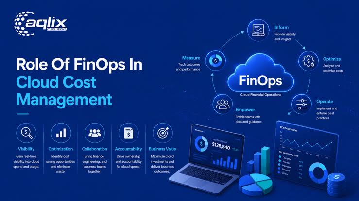

FinOps 101
By Yousef N. • March 11, 2026 • 5 min read

Introduction
Cloud computing allows organizations to scale quickly, but without proper cost management, cloud bills can grow unexpectedly. Financial Operations, commonly known as FinOps, is a practice that helps organizations manage cloud spending efficiently while maximizing business value. It brings together engineering, finance, and operations teams to make informed decisions about cloud resources.
What is FinOps?
FinOps is a framework that encourages collaboration between technical and financial teams. Instead of waiting for monthly invoices, organizations monitor cloud costs continuously and optimize resource usage in real time. This approach helps companies control spending while maintaining high application performance.
Why is FinOps Important?
Many cloud services operate on a pay-as-you-go pricing model. Running unused virtual machines, oversized databases, or idle storage resources can quickly increase costs. FinOps helps identify these unnecessary expenses and ensures that every cloud resource provides value to the organization.
Best Practices
Successful FinOps begins with monitoring cloud usage regularly. Teams should create budgets, set spending alerts, remove unused resources, and use tagging strategies to track costs by department or project. Choosing reserved instances or savings plans for predictable workloads can also significantly reduce long-term expenses.
Useful Cloud Cost Tools
Major cloud providers offer built-in cost management tools. AWS provides AWS Cost Explorer and AWS Budgets, Microsoft Azure offers Azure Cost Management, and Google Cloud provides Cloud Billing Reports. These tools help users analyze spending patterns and discover opportunities to save money.
FinOps for Students
Students building cloud projects should develop good cost-management habits from the beginning. Using free-tier services, deleting unused resources after practical sessions, and monitoring billing dashboards can prevent unexpected charges while providing valuable real-world experience.
"The cheapest cloud resource is the one you no longer need."
Conclusion
FinOps is becoming an essential skill for cloud professionals. Understanding cloud pricing, monitoring resource usage, and optimizing infrastructure not only reduces costs but also improves the overall efficiency of cloud environments. Learning FinOps prepares students for careers in Cloud Engineering, DevOps, and Cloud Architecture, where cost optimization is a critical responsibility.
← Back to Blog